```{r warning=FALSE, message=FALSE}
library(tidyverse)
library(ggplot2)
library(gridExtra)
library(png)
library(grid)
library(lattice)
library(readxl)
library(lubridate)
library(scales)
```Statistical Analysis of Flight Fares
Introduction.
Quarto enables you to weave together content and executable code into a finished document. To learn more about Quarto see https://quarto.org.
Exploratory Data Analysis
LOAD REQUIRED LIBRARIES
LOAD DATASET
```{r}
train <- read_excel("data/Flight_data.xlsx")
```To get dimension of our dataset, i.e., shape
```{r}
dim(train)
```[1] 10683 11To print the top 5 rows of our dataset
```{r}
head(train, 5)
```# A tibble: 5 × 11
Airline Date_of_Journey Source Destination Route Dep_Time Arrival_Time
<chr> <chr> <chr> <chr> <chr> <chr> <chr>
1 IndiGo 24/03/2019 Banglore New Delhi BLR → … 22:20 01:10 22 Mar
2 Air India 1/05/2019 Kolkata Banglore CCU → … 05:50 13:15
3 Jet Airways 9/06/2019 Delhi Cochin DEL → … 09:25 04:25 10 Jun
4 IndiGo 12/05/2019 Kolkata Banglore CCU → … 18:05 23:30
5 IndiGo 01/03/2019 Banglore New Delhi BLR → … 16:50 21:35
# ℹ 4 more variables: Duration <chr>, Total_Stops <chr>, Additional_Info <chr>,
# Price <dbl>HANDLING MISSING DATA
To check for missing values and drop missing values
```{r}
print(colSums(is.na(train)))
train <- na.omit(train)
``` Airline Date_of_Journey Source Destination Route
0 0 0 0 1
Dep_Time Arrival_Time Duration Total_Stops Additional_Info
0 0 0 1 0
Price
0 CLEAN DATE OF JOURNEY VARIABLE
To extract day, month, year, and weekday from Date of Journey
```{r}
train$Journey_Day <- day(dmy(train$Date_of_Journey))
train$Journey_Month <- month(dmy(train$Date_of_Journey))
train$Journey_Year <- year(dmy(train$Date_of_Journey))
train$weekday <- wday(dmy(train$Date_of_Journey), label = TRUE)
```Remove the Date_of_Journey column since it is no longer needed
```{r}
train$Date_of_Journey <- NULL
```Now we can see the list of column names in our dataset
```{r}
names(train)
``` [1] "Airline" "Source" "Destination" "Route"
[5] "Dep_Time" "Arrival_Time" "Duration" "Total_Stops"
[9] "Additional_Info" "Price" "Journey_Day" "Journey_Month"
[13] "Journey_Year" "weekday" CLEAN DURATION VARIABLE
Converting duration into minutes. Firstly we define duration function
```{r}
duration <- function(test) {
test <- gsub("\\s+", "", test) # remove white spaces
total <- strsplit(test, split = "[a-zA-Z]+")[[1]] # split the string into substrings
to <- total[1]
hrs <- as.numeric(gsub("[^[:digit:]]", "", to)) * 60 # extract the hours and convert to minutes
if (length(total) == 2) {
mint <- as.numeric(gsub("[^[:digit:]]", "", total[2])) # extract the minutes
hrs <- hrs + mint
}
return(as.character(hrs))
}
```Apply duration function to the “Duration” column
```{r}
train$Duration <- sapply(train$Duration, duration)
```Get number of unique values in “Duration” column
```{r}
n_distinct(train$Duration)
```[1] 367CLEAN DEP TIME AND ARRIVAL TIME VARIABLE
To get whether its a morning,evening,night or afternoon flight from departure time & arrival time of the flight, we will define deparrtime function first
```{r}
deparrtime <- function(x) {
x <- gsub("\\s+", "", x) # remove white spaces
tt <- as.numeric(strsplit(x, split = ":")[[1]][1]) # extract the hour
if (tt >= 16 & tt < 21) {
x <- "Evening"
} else if (tt >= 21 | tt < 5) {
x <- "Night"
} else if (tt >= 5 & tt < 11) {
x <- "Morning"
} else if (tt >= 11 & tt < 16) {
x <- "Afternoon"
}
return(x)
}
```Then we will apply deparrtime function to the “Dep_Time” and “Arrival_Time” columns
```{r}
train$Dep_Time <- sapply(train$Dep_Time, deparrtime)
train$Arrival_Time <- sapply(train$Arrival_Time, deparrtime)
```CLEAN TOTAL STOPS VARIABLE
Firstly, define stops function to Convert total_stops to 0,1,2,3 etc.
```{r}
stops <- function(x) {
ifelse(x == 'non-stop', '0', substr(x, 1, 1))
}
```Then we apply stops function to the “Total_Stops” column
```{r}
train$Total_Stops <- sapply(train$Total_Stops, stops)
```FURTHER DATA CLEANING
Replace “No info” with “No Info” in the “Additional_Info” column
Drop the “Route” column
```{r}
train$Additional_Info <- ifelse(train$Additional_Info == "No info", "No Info", train$Additional_Info)
train <- train[, !(names(train) %in% c("Route"))]
```View the first two rows of the data and get information about the data frame
```{r}
head(train, 2)
str(train)
```# A tibble: 2 × 13
Airline Source Destination Dep_Time Arrival_Time Duration Total_Stops
<chr> <chr> <chr> <chr> <chr> <chr> <chr>
1 IndiGo Banglore New Delhi Night Night 170 0
2 Air India Kolkata Banglore Morning Afternoon 445 2
# ℹ 6 more variables: Additional_Info <chr>, Price <dbl>, Journey_Day <int>,
# Journey_Month <dbl>, Journey_Year <dbl>, weekday <ord>
tibble [10,682 × 13] (S3: tbl_df/tbl/data.frame)
$ Airline : chr [1:10682] "IndiGo" "Air India" "Jet Airways" "IndiGo" ...
$ Source : chr [1:10682] "Banglore" "Kolkata" "Delhi" "Kolkata" ...
$ Destination : chr [1:10682] "New Delhi" "Banglore" "Cochin" "Banglore" ...
$ Dep_Time : Named chr [1:10682] "Night" "Morning" "Morning" "Evening" ...
..- attr(*, "names")= chr [1:10682] "22:20" "05:50" "09:25" "18:05" ...
$ Arrival_Time : Named chr [1:10682] "Night" "Afternoon" "Night" "Night" ...
..- attr(*, "names")= chr [1:10682] "01:10 22 Mar" "13:15" "04:25 10 Jun" "23:30" ...
$ Duration : Named chr [1:10682] "170" "445" "1140" "325" ...
..- attr(*, "names")= chr [1:10682] "2h 50m" "7h 25m" "19h" "5h 25m" ...
$ Total_Stops : Named chr [1:10682] "0" "2" "2" "1" ...
..- attr(*, "names")= chr [1:10682] "non-stop" "2 stops" "2 stops" "1 stop" ...
$ Additional_Info: chr [1:10682] "No Info" "No Info" "No Info" "No Info" ...
$ Price : num [1:10682] 3897 7662 13882 6218 13302 ...
$ Journey_Day : int [1:10682] 24 1 9 12 1 24 12 1 12 27 ...
$ Journey_Month : num [1:10682] 3 5 6 5 3 6 3 3 3 5 ...
$ Journey_Year : num [1:10682] 2019 2019 2019 2019 2019 ...
$ weekday : Ord.factor w/ 7 levels "Sun"<"Mon"<"Tue"<..: 1 4 1 1 6 2 3 6 3 2 ...
- attr(*, "na.action")= 'omit' Named int 9040
..- attr(*, "names")= chr "9040"Make a copy of the data frame
```{r}
flight_data <- train
```Convert columns to the specified data types
```{r}
flight_data$Duration <- as.integer(flight_data$Duration)
for (col in colnames(flight_data)) {
if (is.character(flight_data[[col]])) {
flight_data[[col]] <- as.factor(flight_data[[col]])
}
}
```Replace values in the “Journey_Month” column
```{r}
flight_data$Journey_Month <- factor(flight_data$Journey_Month, levels = c(3, 4, 5, 6), labels = c("March", "April", "May", "June"))
```EXPLORATORY DATA ANALYSIS
JOURNEY MONTH VS TOTAL FARE
This plot visualizes the total each month with total fare per month
```{r}
v1 <- ggplot(flight_data, aes(x = Journey_Month, y = Price, fill = Journey_Month)) +
geom_bar(stat = "summary", fun = sum) +
ggtitle("Monthv/sPrice") +
ylab("Price") +
xlab("Month of booking") +
scale_fill_brewer(palette = "Set1") + # add color scale
scale_y_continuous(labels = function(x) format(x, scientific = FALSE),
breaks = seq(0, 30000000, 5000000)) +
theme(axis.text.x = element_text(angle = 80, vjust = 0.5, hjust=1))
v1
```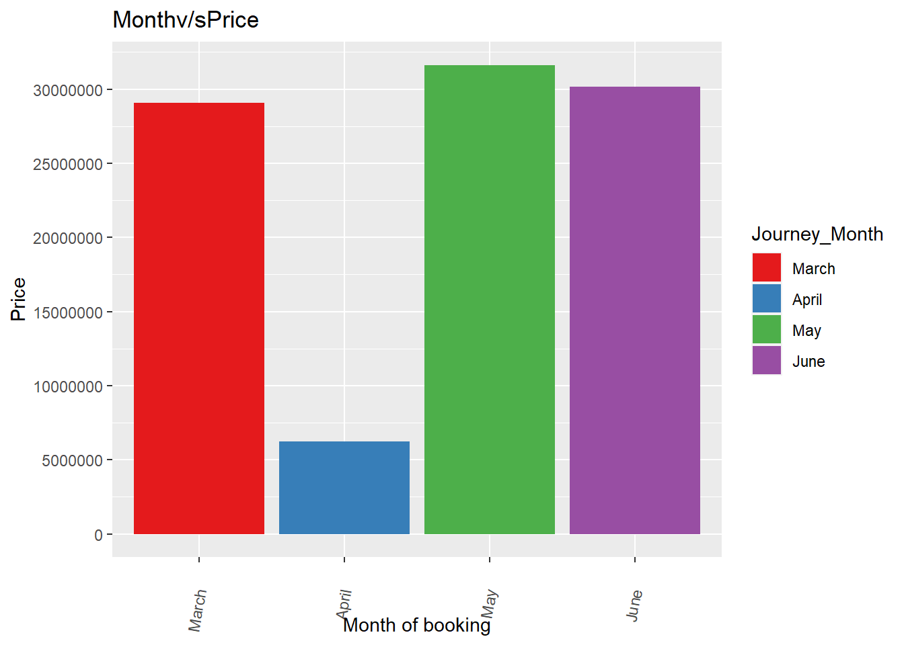
COUNT OF FLIGHTS PER MONTH
Firstly create a data frame from the top_month data then plot a bar plot
```{r}
top_month <- head(sort(table(flight_data$Journey_Month), decreasing = TRUE), 10)
top_month_df <- data.frame(month = names(top_month), count = top_month)
ggplot(top_month_df, aes(x = month, y = count.Freq, fill = month)) +
geom_bar(stat = "identity") +
ggtitle("Count of flights per month") +
geom_text(aes(label = count.Freq), vjust = -0.5, color = "black", size = 4)+
ylab("Number of Bookings") +
xlab("Month") +
theme(axis.text.x = element_text(angle = 90, vjust = 0.5, hjust=1))
```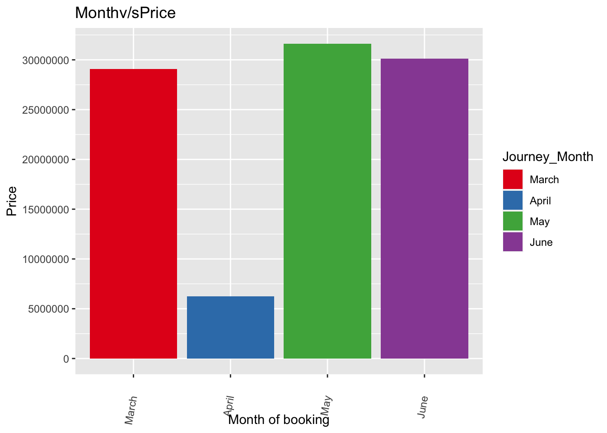
Compute the average price for each month then create a bar plot showing the average price for each month
```{r}
monthly_avg <- flight_data %>%
group_by(Journey_Month) %>%
summarise(avg_price = mean(Price))
ggplot(monthly_avg, aes(x = Journey_Month, y = avg_price, fill = Journey_Month)) +
geom_bar(stat = "identity") +
ggtitle("Journey Month vs Average Fare") +
xlab("Month of Journey") +
ylab("Average Fare") +
theme_bw()
```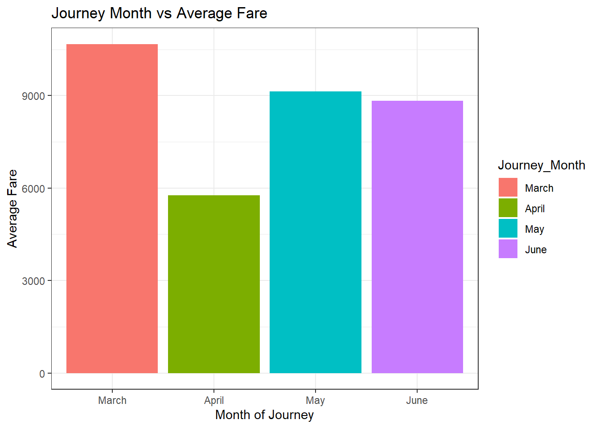
Create a box plot showing the distribution of prices for each destination
```{r}
ggplot(flight_data, aes(x = Destination, y = Price, fill = Destination)) +
geom_boxplot() +
ggtitle("Destination vs Average Price") +
xlab("Destination") +
ylab("Average Price") +
theme_bw() +
coord_flip()
```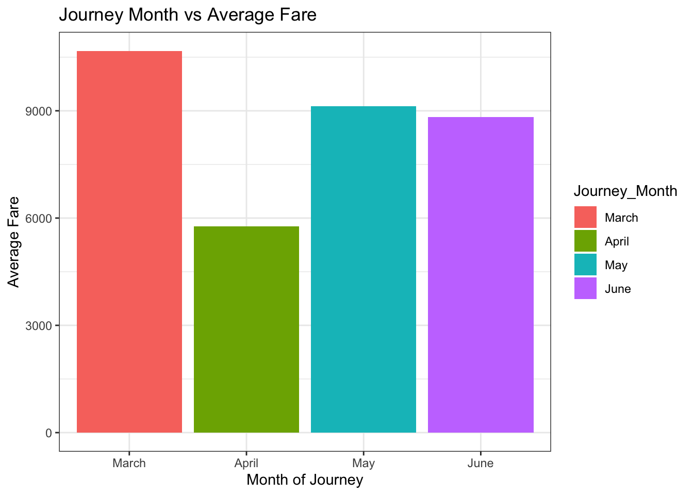
Source vs AveragePrice
```{r}
ggplot(train %>% arrange(desc(Price)), aes(Source, Price, fill = Source)) +
geom_boxplot() +
theme_bw() +
labs(title = "Source vs Average Price")
```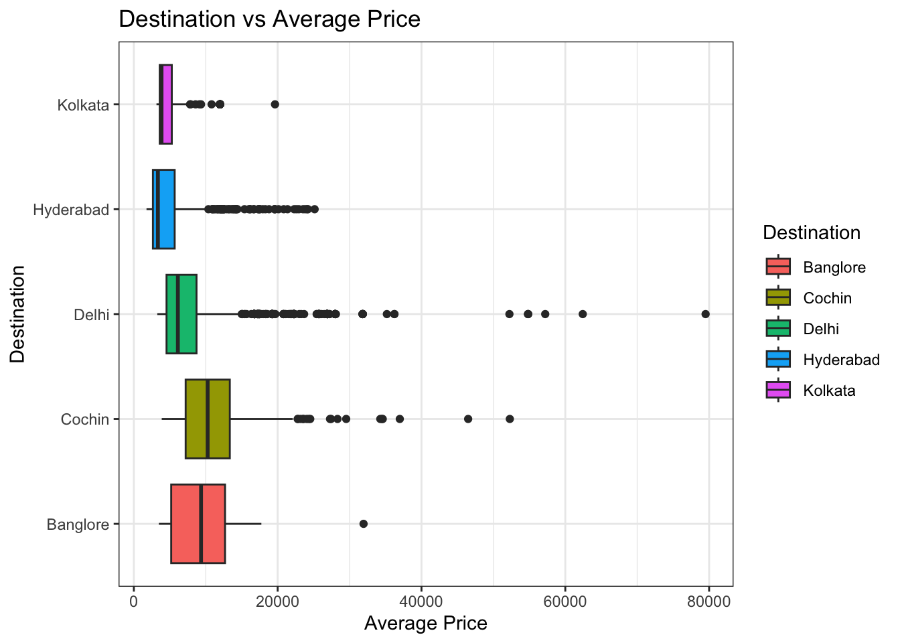
Count of flights v/s Airline
```{r}
ggplot(train, aes(Airline, fill= Airline)) +
geom_bar() +
theme_bw() +
labs(title = "Count of flights with different Airlines",
x = "Airline",
y = "Count of flights") +
theme(axis.text.x = element_text(angle = 90, vjust = 0.5)) +
geom_text(stat = "count", aes(label = ..count..), vjust = -0.5)
```Warning: The dot-dot notation (`..count..`) was deprecated in ggplot2 3.4.0.
ℹ Please use `after_stat(count)` instead.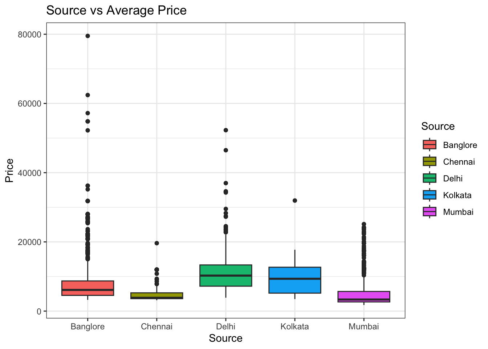
Airline vs AveragePrice
```{r}
ggplot(train %>% arrange(desc(Price)), aes(Airline, Price, fill= Airline)) +
geom_boxplot() +
theme_bw() +
labs(title = "Airline vs Average Price")
```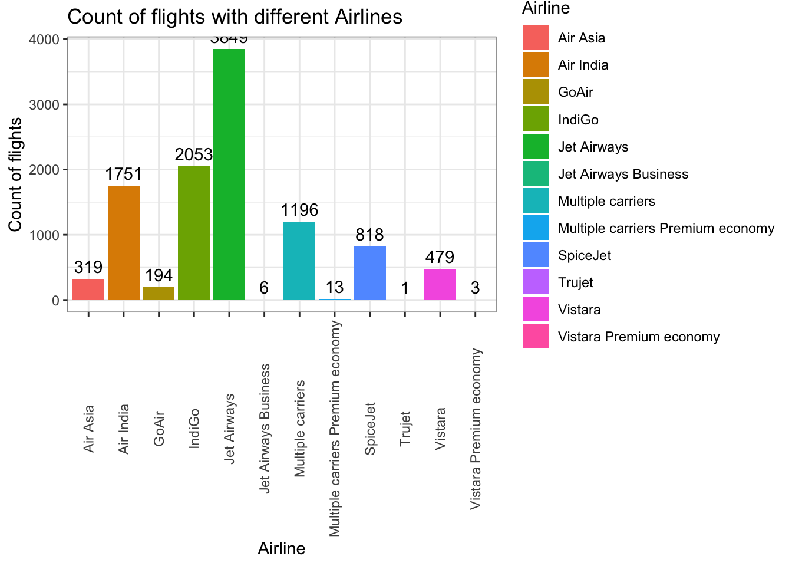
duration v/s AveragePrice
```{r}
ggplot(train, aes(Duration, Price)) +
geom_point() +
theme_bw() +
labs(title = "Duration vs Average Price")
```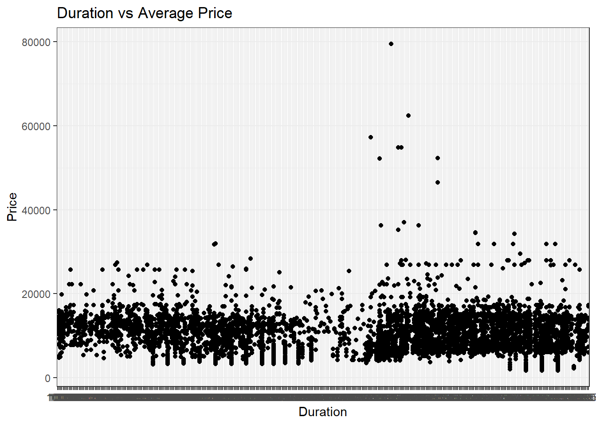
Deptarure time v/s AveragePrice
```{r}
ggplot(train, aes(Dep_Time, Price, fill= Dep_Time)) +
geom_bar(stat = "summary", fun = "mean") +
theme_bw() +
labs(title = "Departure Time vs Average Price",
x = "Time of departure",
y = "Price") +
theme(axis.text.x = element_text(angle = 90, vjust = 0.5))
```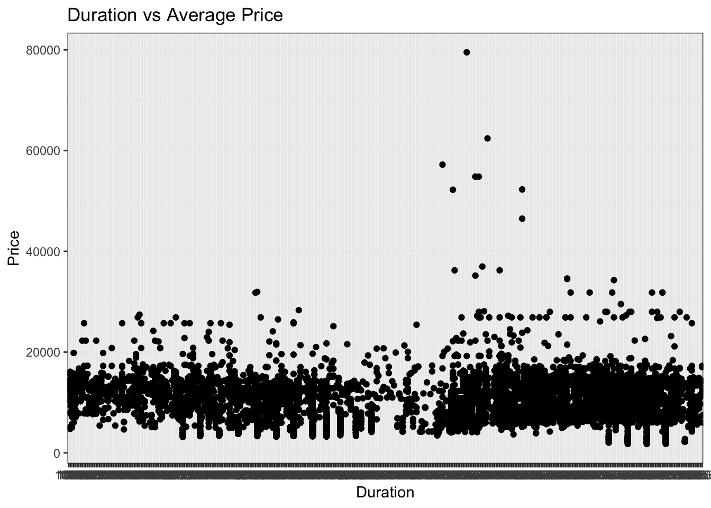
time of departure v/s count of flights
```{r}
top_time <- train %>%
count(Dep_Time) %>%
top_n(10, n)
ggplot(top_time, aes(Dep_Time, n)) +
geom_bar(stat = "identity", fill = "purple") +
geom_text(aes(label = n), vjust = -0.5, color = "black", size = 4) +
theme_bw() +
labs(title = "Top 10 Departure Time vs Count of Flights",
x = "Time of departure",
y = "Count of flights") +
theme(axis.text.x = element_text(angle = 90, vjust = 0.5))
```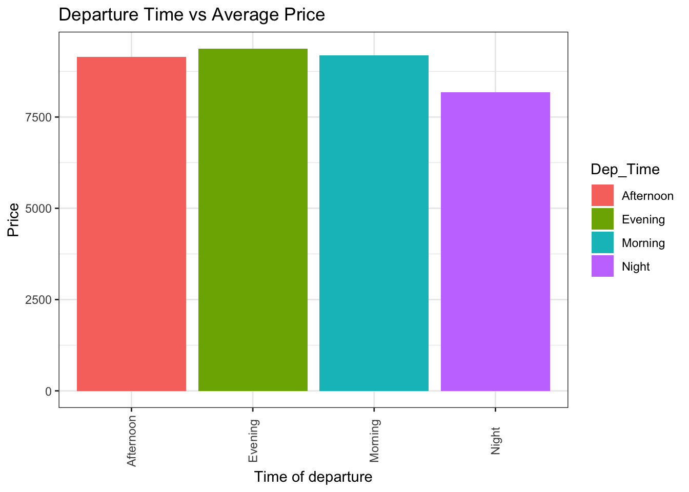
TIME OF ARRIVAL V/S average price
```{r}
ggplot(train, aes(Arrival_Time, Price)) +
geom_bar(stat = "summary", fun = "mean", fill = "red") +
theme_bw() +
labs(title = "Time of Arrival vs Average Price",
x = "Arrival Time",
y = "Price") +
theme(axis.text.x = element_text(angle = 90, vjust = 0.5))
```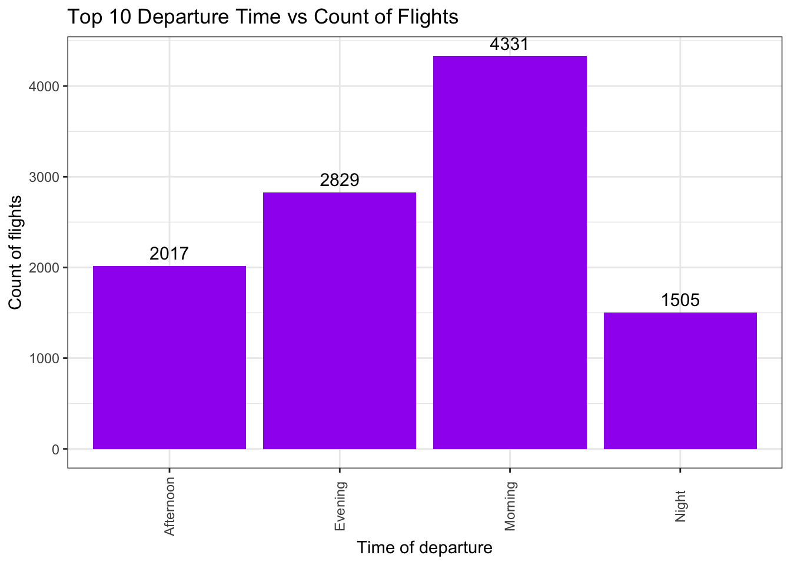
total stops v/s average price
```{r}
ggplot(train, aes(Total_Stops, Price)) +
geom_bar(stat = "summary", fun = "mean", fill = "steelblue") +
theme_bw() +
labs(title = "Number of Stops vs Average Price",
x = "Total Stops",
y = "Price") +
theme(axis.text.x = element_text(angle = 90, vjust = 0.5))
```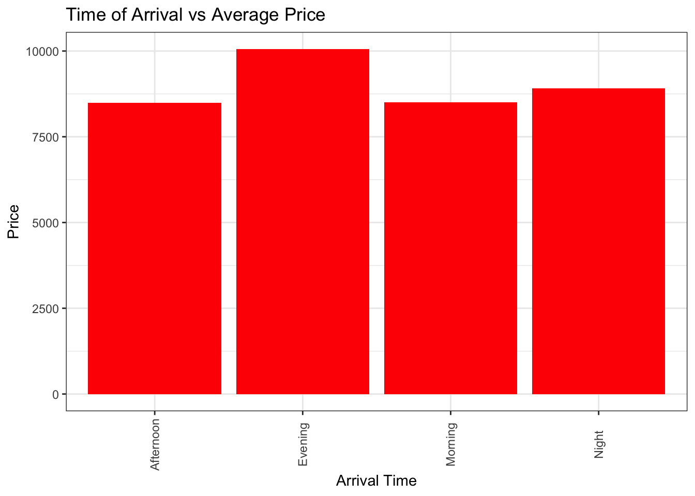
WEEKDAY V/S average price
```{r}
ggplot(train, aes(weekday, Price)) +
geom_bar(stat = "summary", fun = "mean", fill= "brown") +
theme_bw() +
labs(title = "Weekday vs Average Price", x = "Weekday", y = "Price") +
theme(axis.text.x = element_text(angle = 90, vjust = 0.5))
```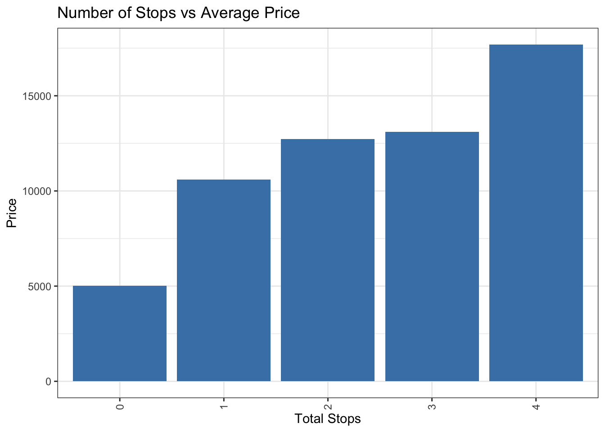
```{r}
unique(train$Journey_Day)
# Count of flights with different dates
ggplot(train, aes(x = Journey_Day)) +
geom_bar(colour = "black", fill = "blue") +
labs(title = 'Flight Count vs Date',
x = 'Journey_Day',
y = 'Count of flights') +
theme(axis.text.x = element_text(angle = 90, hjust = 1)) +
geom_text(stat = 'count', aes(label = ..count..), vjust = -0.5)
``` [1] 24 1 9 12 27 18 3 15 6 21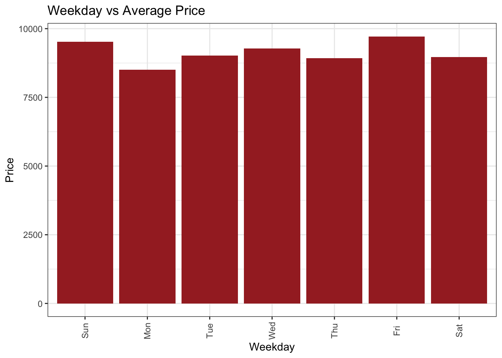
```{r}
# Journey_Day v/s Average price
ggplot(train, aes(x = Journey_Day, y = Price)) +
geom_bar(stat = 'summary', fun = 'mean', fill = 'steelblue') +
labs(title = 'Price of flights with different dates',
x = 'Date',
y = 'Price') +
theme(axis.text.x = element_text(angle = 90, hjust = 1))
```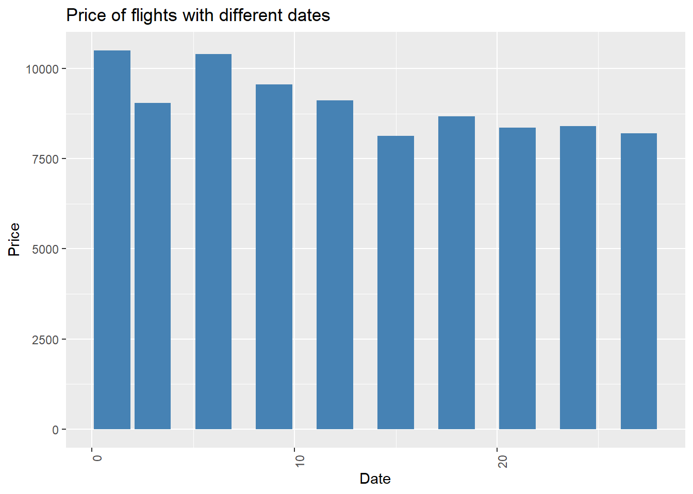